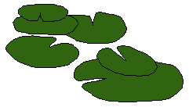
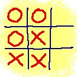
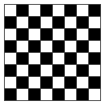
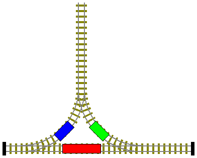
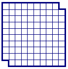
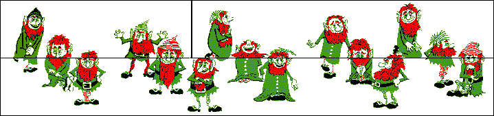

Klik hier om onze sponsor te bezoeken!
Logische Puzzels
|

|
De puzzels zijn gemarkeerd met sterren ( ) die de moeilijkheidsgraad van de betreffende puzzle aangeven.
) die de moeilijkheidsgraad van de betreffende puzzle aangeven.
![[TERUG]](left.gif) terug naar de hoofd-puzzelpagina.
terug naar de hoofd-puzzelpagina.

i.
De Wolf, de Geit en de Kool
Een man heeft een wolf, een geit en een kool.
Hij moet een rivier oversteken met de twee dieren en de kool.
Er is een kleine roeiboot waarin hij slechts één ding tegelijk
kan meenemen. Echter, als de wolf en de geit alleen gelaten worden, eet de
wolf de geit op. Als de geit en de kool alleen gelaten worden, eet de geit
de kool op.
De Vraag:
Hoe kan de man de rivier oversteken met de twee dieren en de kool?
Het Antwoord:
 Klik hier!...
Klik hier!...
![[OMHOOG]](back.gif) terug naar de index
terug naar de index
ii.
Absurde Antwoorden 
Hier staan drie antwoorden:
- Antwoord A
- Antwoord A of B
- Antwoord B of C
De Vraag:
Er is slechts één correct antwoord op deze vraag. Welk van de antwoorden is dat?
Het Antwoord:
Klik hier!...
terug naar de index

iii.
Woekerende Waterlelie
In het midden van een ronde vijver groeit een
prachtige waterlelie. De waterlelie verdubbelt dagelijks in oppervlak.
Na precies twintig dagen is de vijver volledig bedekt door de waterlelie.
De Vraag:
Na hoeveel dagen is de helft van de vijver bedekt door de waterlelie?
Het Antwoord:
Klik hier!...
terug naar de index
iv.
Koddige Kruiken
Je staat naast een waterbron, en je hebt twee kruiken.
De ene kruik heeft een inhoud van 3 liter en de andere kruik een inhoud van 5 liter.
De Vraag:
Hoe kun je 4 liter water afmeten met deze twee kruiken?
Het Antwoord:
Klik hier!...
terug naar de index

v.
Domme Dief
Een behoorlijk domme autodief had, zonder het te weten, de auto van de hoofdcommissaris van politie
gestolen.
De politie stelde meteen een onderzoek in en op basis van getuigenverklaringen werden vier
verdachte personen, die rond de tijd van het misdrijf in de buurt van de auto waren gezien,
gearresteerd.
Omdat de hoofdcommissaris de zaak hoog opnam, besloot hij de vier verdachten persoonlijk te
verhoren en de gloednieuwe leugendetector van het politiebureau in te zetten.
Elke verdachte gaf bij het verhoor drie verklaringen, die hieronder staan:
Verdachte A:
- Op de middelbare school heb ik bij verdachte C in de klas gezeten.
- Verdachte B is de schuldige.
- De dief wist niet dat het de auto van de hoofdcommissaris was.
Verdachte B:
- Verdachte C is de schuldige.
- Verdachte A is onschuldig.
- Ik heb het niet gedaan.
Verdachte C:
- Ik heb verdachte A voor vandaag nog nooit ontmoet.
- Verdachte B is onschuldig.
- Verdachte D heeft een rijbewijs.
Verdachte D:
- Verdachte C is onschuldig.
- Ik heb nog nooit achter het stuur van een auto gezeten.
- Verdachte A is de schuldige.
Met zoveel elkaar tegensprekende verklaringen wist de hoofdcommissaris het ook niet meer.
Tot overmaat van ramp bleek ook dat de leugendetector nog niet helemaal werkte zoals het
hoorde, want het apparaat gaf alleen aan dat er van de 12 verklaringen precies 6 waar waren,
maar niet welke.
De Vraag:
Wie is de autodief?
Het Antwoord:
Klik hier!...
terug naar de index

vi.
Boter, Kaas & Eieren
David en Angela spelen een spelletje boter, kaas & eieren.
Bij dit spelletje proberen de spelers drie kruisjes of
rondjes in één lijn te krijgen (horizontaal, verticaal of diagonaal).
Hierbij houden ze de volgende regels aan:
- Een speler probeert altijd te winnen: als een speler zijn eigen symbool (X of O) kan zetten in een rij
waar al twee van zijn eigen symbolen staan, dan zal hij dat doen.
- Een speler probeert te voorkomen dat de tegenstander wint: als een speler zijn eigen symbool (X of O)
kan zetten in een rij waar al twee symbolen van de tegenstander staan, dan zal hij dat doen.
De eerste regel krijgt natuurlijk altijd voorrang op de tweede, omdat daarmee het spel gewonnen is.
In het spelletje hiernaast zijn al 6 zetten gedaan.
David speelt met kruisjes en Angela speelt met rondjes.
Er is echter niet bekend wie het spelletje begonnen is.
De Vraag:
Wie zal het spel winnen?
Het Antwoord:
Klik hier!...
terug naar de index
vii.
De Ronde Tafel
Gisteravond hebben Heleen en haar man hun buren (twee echtparen) uitgenodigd
voor een diner bij hen thuis.
De zes personen zaten aan een ronde tafel. Heleen vertelt je het volgende:
- "Victor zat links van de vrouw die links zat van de man
die links zat van Anna.
- Esther zat links van de man die links zat van de vrouw die links zat van de man die links
zat van de vrouw die links zat van mijn man.
- Jim zat links van de vrouw die links zat van Roger.
- Ik zat niet naast mijn man."
De Vraag:
Wat is de naam van Heleens man?
Het Antwoord:
Klik hier!...
terug naar de index
viii.
Handig Handen Schudden
Jack en zijn vrouw gingen naar een feestje waar nog vier andere getrouwde stellen
aanwezig waren. Elke persoon heeft handen geschud met iedereen die hij of zij nog
niet kende. Nadat het handen schudden voorbij was, vroeg Jack iedereen, inclusief
zijn vrouw, hoeveel handen zij geschud hadden.
Tot zijn verbazing kreeg Jack negen verschillende antwoorden.
De Vraag:
Hoeveel handen heeft Jacks vrouw geschud?
Het Antwoord:
Klik hier!...
terug naar de index

ix.
Lastige Lamp
In een kamer bevindt zich een gloeilamp. Buiten de kamer bevinden
zich drie schakelaars, waarvan er slechts één met de
lamp is verbonden. In de beginsituatie staan alle schakelaars op 'uit'
en brandt de lamp niet.
De Vraag:
Als je maar één keer de kamer
in mag gaan om te controleren of de lamp al dan niet brandt (je
kunt dit namelijk van buitenaf absoluut niet zien), hoe kun je dan
te weten komen met welke van de drie schakelaars je de lamp kunt aan- en
uitdoen?
Het Antwoord:
Klik hier!...
terug naar de index
x.
Appels en Peren
Tom heeft drie dozen fruit in zijn schuur staan: één
met appels, één met peren en één met
appels en peren. Op de dozen zitten labels die de inhoud van de drie
dozen beschrijven, maar geen van de labels zit op de goede doos.
De Vraag:
Hoe kan Tom, door slechts uit één doos één
stuk fruit te pakken, vaststellen wat er in elk van de dozen zit?
Het Antwoord:
Klik hier!...
terug naar de index
xi.
Lange Lonten...
Je hebt de beschikking over een aantal lange lonten
waarvan je slechts weet dat ze precies een uur branden nadat je ze aan het
uiteinde aansteekt. Je weet echter niet of ze met constante snelheid branden,
dus de eerste helft van een lont kan in 10 minuten zijn opgebrand terwijl
pas vijftig minuten later het complete lont is opgebrand...
De Vraag:
Hoe kun je met behulp van deze lonten
precies drie kwartier in tijd afmeten?
Een Hint:
Klik hier!...
Een 2de Hint:
Klik hier!...
Het Antwoord:
Klik hier!...
terug naar de index

xii.
Schaakbord Stukken
Rechts zie je een stuk papier met een afdruk van een schaakbord erop.
We willen het schaakbord papier in stukken knippen (over de lijnen!)
zodat elk stuk twee keer zoveel vierkantjes van de ene kleur heeft als van de andere kleur
(dus twee keer zoveel zwarte vakjes als witte vakjes of twee keer zoveel witte vakjes als
zwarte vakjes).
De Vraag:
Is dit mogelijk? Geef een bewijs!
Het Antwoord:
Klik hier!...
terug naar de index

xiii.
Wagons Wisselen
Rechts zie je een klein rangeerterrein met twee wagons (blauw en groen) en een locomotief (rood).
De wagons hebben een lengte van 5 meter en de locomotief heeft een lengte van 10 meter.
Het doodlopende stuk tussen het stootblok en de wissel linksonder heeft een lengte van 5 meter
(dus de locomotief kan niet van baanvak wisselen bij de wissel linksonder). Het doodlopende stuk
tussen het stootblok en de wissel rechtsonder heeft een lengte van 15 meter.
De locomotief kan vooruit en achteruit rijden, en kan de wagons zowel duwen als trekken.
De Vraag:
Hoe moet de locomotief de wagons rangeren om tot een situatie te komen waarbij
de wagons van plaats verwisseld zijn, en de locomotief weer terug is in zijn
startpositie?
Het Antwoord:
Klik hier!...
terug naar de index
xiv.
Lollige Leugenaar
Richard is een vreemde leugenaar.
Op zes dagen van de week liegt hij, maar op de zevende dag
spreekt hij altijd de waarheid. De volgende uitspraken
deed hij op drie opeenvolgende dagen:
Dag 1: "Ik lieg op maandag en dinsdag."
Dag 2: "Vandaag is het donderdag, zaterdag of
zondag."
Dag 3: "Ik lieg op woensdag en vrijdag."
De Vraag:
Op welke dag spreekt Richard de waarheid?
Het Antwoord:
Klik hier!...
terug naar de index
xv.
Vierkante Rondjes
Gegeven zijn de volgende drie vergelijkingen:
 =
=
-
=
-
=
De Vraag:
Hoeveel rondjes is een vierkant, als je uitgaat van de verhoudingen
in de gegeven drie vergelijkingen;
met andere woorden: hoeveel rondjes moeten er op de onderstaande puntjes staan?
= ...
Het Antwoord:
Klik hier!...
terug naar de index

xvi.
Stenen Stapelen
Probeer het gehele bord (10x10-2) vol te stapelen met
stenen ter grootte 2 ( en
 ), zodanig dat geen
stenen elkaar overlappen, er geen onbedekte plaatsen meer op het bord zijn,
en geen van de stenen over de rand van het bord steekt.
), zodanig dat geen
stenen elkaar overlappen, er geen onbedekte plaatsen meer op het bord zijn,
en geen van de stenen over de rand van het bord steekt.
De Vraag:
Is dit mogelijk? (Bewijs maar!)
Het Antwoord:
Klik hier!...
Nog een Vraag:
Hoeveel vierkantjes zitten er in het plaatje van het bord?
Nog een Antwoord:
Klik hier!...
terug naar de index
xvii.
Radeloze Reiziger
Een reiziger, op weg naar Eindhoven,
komt bij een splitsing waar hij zowel links als rechts af
kan slaan. Hij weet dat slechts één van de twee
wegen naar Eindhoven leidt, maar helaas weet hij niet welke.
Gelukkig ziet hij twee tweeling-broers bij de splitsing staan,
en hij besluit hen de weg te vragen.
De reiziger weet dat één van de
broers altijd de waarheid zegt, en dat de andere altijd liegt. Maar
hij weet helaas niet welke van de twee altijd de waarheid vertelt
en welke niet.
De Vraag:
Hoe kan de reiziger er achter komen welke weg naar Eindhoven leidt
door slechts één vraag te stellen?
Het Antwoord:
Klik hier!...
terug naar de index
xviii.
Het Verdwijnende Ventje
Bekijk het onderstaande figuur met vijftien ventjes.
Het is onderverdeeld in drie vlakken (links boven, rechts boven, en de onderste helft).

Wanneer de bovenste twee vlakken worden omgewisseld krijgen we het
onderstaande figuur. Dit figuur telt echter slechts veertien ventjes! (Als je het niet
gelooft, dan uitprinten en uitknippen en je zult zien dat het echt waar is!)

De Vraag:
Waar is het vijftiende ventje gebleven?
Het Antwoord:
Klik hier!...
terug naar de index
xix.
Diverse Dozen
Barbara heeft dozen in drie formaten: groot, standaard en klein.
Ze zet 11 grote dozen op tafel.
Sommige van deze dozen laat ze leeg,
en in elk van de andere plaatst ze 8 standaarddozen.
Sommige van die standaarddozen laat ze leeg,
en in elk van de andere plaatst ze 8 (lege) kleine dozen.
Van alle dozen op tafel zijn er nu 102 leeg.
De Vraag:
Hoeveel dozen heeft Barbara in totaal gebruikt?
Het Antwoord:
Klik hier!...
terug naar de index
xx.
Op School
De heren Hollander, Engels, Schilder en Schrijver zijn
alle vier docenten aan dezelfde middelbare school.
Elke docent geeft les in twee verschillende vakken.
Verder geldt:
- Drie docenten geven Nederlandse les
- Er is maar één docent wiskunde
- Er zijn twee docenten scheikunde
- Twee docenten, Simon en de heer Engels, geven geschiedenisles
- Peter geeft geen Nederlandse les
- Stefan is leraar scheikunde
- De heer Hollander doceert geen enkel vak dat
door Karel of de heer Schilder wordt gedoceerd.
De Vraag:
Wat is de volledige naam van elke docent en in welke
twee vakken geeft hij les?
Het Antwoord:
Klik hier!...
terug naar de index
Click Here to Visit our Sponsor
Copyright © 1996-2005. RJE-productions. All rights reserved.